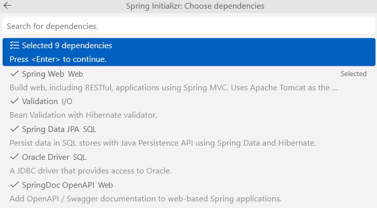
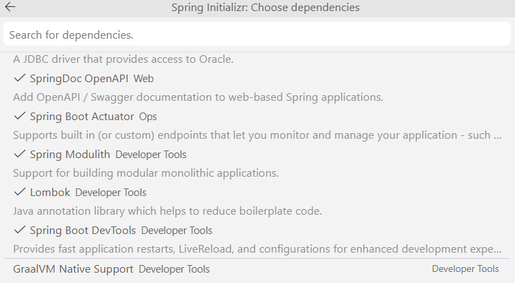
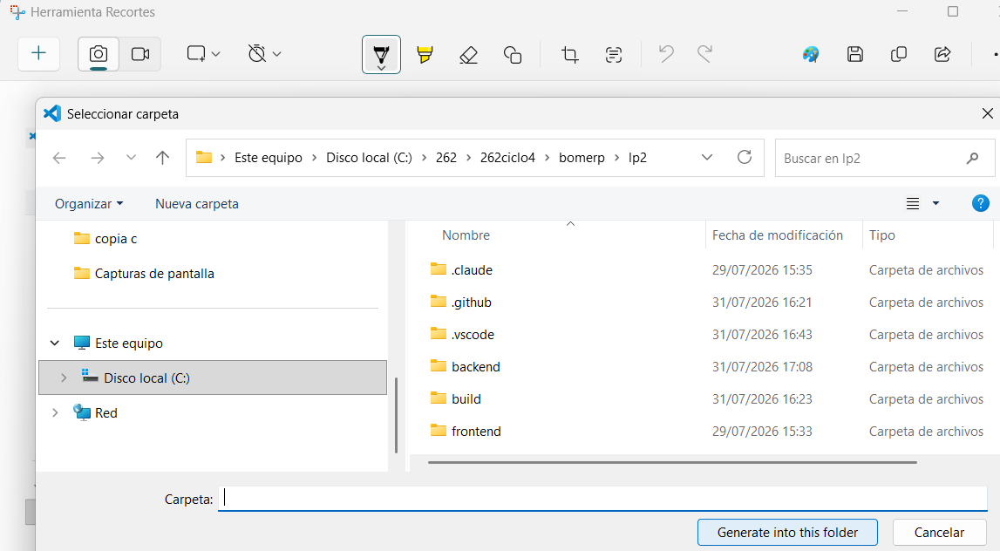
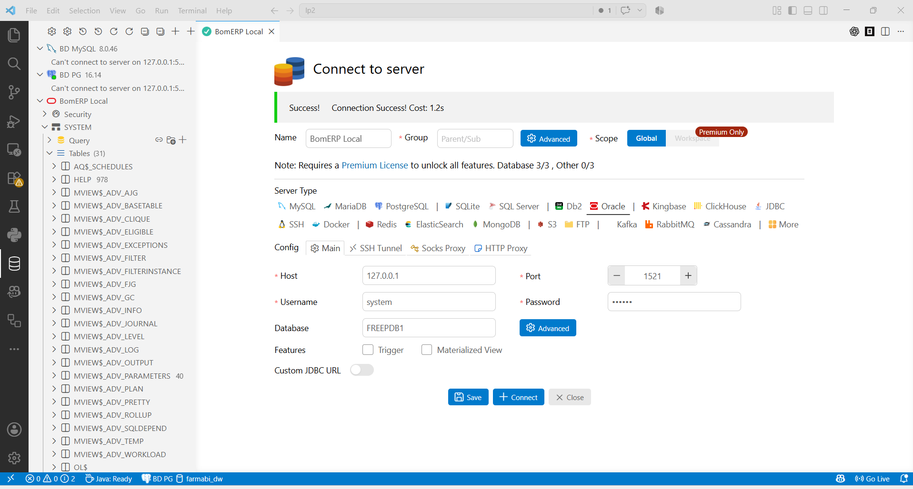

S1 - Arquitectura Backend REST Profesional¶
Por: Angel Sullon Macalupu @asullom - 2026
1. Introducción¶
Tiempo: 20 min.
1.1 Presentación de la sesión¶
La arquitectura de un backend decide qué tan fácil es mantenerlo y hacerlo crecer sin romperse. Esta sesión instala Java 21, crea el proyecto backend como monolito modular conectado a Oracle, y define su contrato REST inicial (Categoria, Producto, versionado, OpenAPI).
1.2 Índice¶
- Estructura del proyecto backend y dependencias.
- Configuración por ambientes, ORM, driver y conexión a Oracle.
- Endpoint de verificación, recurso REST inicial y DTO.
- Contrato, versionado básico de API y documentación OpenAPI.
1.3 Propósito de aprendizaje¶
Al concluir la clase, estarás en condiciones de:
- Crear y entregar un proyecto backend ejecutable y reproducible, sobre Java 21 LTS, con conexión a Oracle verificada mediante ORM, endpoint de salud, listados de
CategoriayProducto, módulos de negocio, DTO de salida, contrato y versionado básico de API, y documentación OpenAPI inicial.
1.4 Producto de sesión¶
Proyecto backend ejecutable y reproducible, sobre Java 21 LTS, organizado como monolito modular y conectado a Oracle con su conexión verificada mediante ORM, con endpoint de salud, contrato y versionado básico de API definidos, y los listados de Categoria y Producto documentados mediante OpenAPI.
1.5 Metodología¶
Tabla 1. Metodología de la sesión
| Actividades a Realizar en el Periodo | Orientaciones generales (Orientaciones Metodológicas) | Material de estudio recomendado |
|---|---|---|
| Revisión previa individual | Instalar y verificar Java 21 LTS, VS Code y sus extensiones; leer ADR-001 y ADR-002. Trabajo individual, antes de clase; traer evidencia de java -version funcionando. |
ADR-001, ADR-002, guía de instalación Java 21. |
| Clase presencial | Explicación guiada de conceptos (REST, DTO, versionado, ambientes) y creación del proyecto backend conectado a Oracle; delimitación de los endpoints del módulo catalogo. Trabajo individual en la propia laptop, siguiendo al docente paso a paso; consulta inmediata ante errores de dependencias o conexión. |
pom.xml de referencia, application-local.yml, Docker Compose de Oracle, cliente REST para verificar endpoints. |
| Evaluación formativa | Verificación en clase de mvn test (incluye ModularityTests) y de la respuesta del endpoint de salud y los listados; inicio de la evidencia individual. La evidencia se completa y sustenta de forma individual, fuera del aula, según los criterios mínimos de la sección 4.4. |
Indicaciones de entrega (4.3), rúbrica de evaluación (4.6). |
1.6 Motivación de la sesión¶
1.6.1 Caso: catálogo de BomERP (Categoria–Producto)¶
Antes de escribir el primer endpoint, hay algo más urgente que resolver: ¿este backend arranca de forma reproducible y realmente conecta a Oracle, o solo "funciona en mi máquina"? Esa pregunta no es solo de LP2 — BomERP (Business Operations Management – Enterprise Resource Planning), el proyecto integrador evolutivo de ADS, BD2 y LP2 en este ciclo, depende de que esta base funcione: ADS define en paralelo, en su propia S1, la primera visión arquitectónica del sistema (monolito modular verificado con Spring Modulith), y BD2 crea el esquema BOM_CATALOGO sobre el que este backend se conecta. Si el backend no arranca de forma confiable, ninguna de esas dos decisiones tiene dónde apoyarse. Esta sesión construye esa primera pieza concreta: la base backend que arranca de forma reproducible, comprueba su conexión a Oracle y expone los listados iniciales del módulo catalogo: Categoria y Producto.
Preguntas de análisis
Activación de conocimientos previos
- ¿Qué decisión de ADS condiciona la estructura del backend?
- ¿Cómo se evidencia que este backend no es un proyecto aislado, sino la capa que expone las decisiones de ADS y los datos que crea BD2?
Comprensión de arquitectura backend
- ¿Por qué
CategoriayProductopertenecen al mismo módulo de catálogo? - ¿Qué diferencia existe entre una entidad y su DTO de respuesta?
- ¿Cómo demuestran los listados que Controller, Service, Repository y Oracle están conectados?
1.7 Ubicación en el curso¶
- Unidad: U1 - Backend REST empresarial.
- Producto del curso: base Full-Stack modular de BomERP, integrada, optimizada, monitoreada, estabilizada y preparada académicamente para producción.
- Producto de unidad: backend REST empresarial conectado a la base de datos, con CRUD, transacciones, consultas, reglas de negocio, CORS, logs y pruebas.
- Avance del producto en esta sesión: proyecto backend creado, configurado, conectado y verificable.
Roadmap del producto de la unidad:
Figura 1. Roadmap del producto de la unidad
flowchart TB
S1["`**S1:** Proyecto backend, BD, REST y OpenAPI`"]
S2["`**S2:** CRUD maestro, validaciones y pruebas`"]
S3["`**S3:** Objetos relacionados Categoria-Producto`"]
S4["`**S4:** Cabecera-detalle y transacciones`"]
S5["`**S5:** Consultas, reportes y CORS`"]
S6["`**S6:** Producto U1`"]
S1 --> S2 --> S3 --> S4 --> S5 --> S6
classDef today fill:#ffe08a,stroke:#9a6b00,stroke-width:2px,color:#111;
class S1 today;2. Explica¶
Tiempo: 25 min.
2.1 Arquitectura de la sesión¶
Figura 2. Arquitectura del módulo catalogo en el backend BomERP
%%{init: {"flowchart": {"rankSpacing": 25, "nodeSpacing": 20}} }%%
flowchart TB
APP[BomerpBackendApplication] --> CAT
APP -.->|se agregan como paquetes| FUTUROS
subgraph CAT["Módulo catalogo"]
API[Controllers y DTO] --> USE[Services]
USE --> DOM[Entities]
USE --> INF[Repositories JPA]
end
INF --> DB[(Oracle)]
subgraph FUTUROS["Módulos futuros, aún sin crear"]
VEN["ventas (S4)"]
COM["compras (opcional)"]
SEG["seguridad (S10)"]
endLectura del diagrama:
- Organización: primero por módulo de negocio, luego por capa (controller, service, repository, entity).
Categoria/Producto→catalogo;Venta–DetalleVenta→ventas;Compra–DetalleCompra→compras.- Un módulo no accede al repositorio de otro: solo mediante servicios públicos.
- Integración (no exigida en S1): ADS diseña esos componentes; BD2 aporta los objetos que el backend consume.
Este diagrama es el mapa que guía el resto de la explicación, en el mismo orden del Índice (1.2).
2.2 Estructura del proyecto backend y dependencias¶
El proyecto se organiza como monolito modular: un único paquete raíz (BomerpBackendApplication) y, dentro de él, un paquete por módulo de negocio (ver 2.1). Esa estructura se sostiene únicamente sobre las dependencias que la sesión necesita:
Tabla 2. Dependencias del proyecto backend
| Dependencia | Decisión para S1 |
|---|---|
| Spring Web | Se conserva para publicar el recurso REST. |
| Spring Data JPA y driver Oracle | Se conservan para dejar lista y comprobar la persistencia ORM. |
| Validation | Se incorpora al esqueleto; se aplica al CRUD desde S2. |
| Actuator | Se conserva para verificar aplicación y conexión. |
| Springdoc OpenAPI | Se conserva para publicar el contrato inicial. |
| DevTools | Se agrega para reinicio automático y LiveReload durante el desarrollo; Spring Boot la excluye automáticamente del .jar empaquetado, así que no afecta producción. |
| Security y OAuth2 Resource Server | Se posponen hasta S10 — ver ADR-004. |
2.3 Configuración por ambientes, ORM, driver y conexión a Oracle¶
Un ambiente es el conjunto de configuración (variables, credenciales, infraestructura) que corresponde a un contexto de uso concreto: local (tu laptop, para desarrollar) y producción (el sistema real ya en funcionamiento) son dos ambientes distintos; algunos proyectos agregan ambientes intermedios (pruebas o QA, staging).
En BomERP, definimos el ambiente local identificado con el
sufijo -local:
application-local.yml: configuración de Spring Boot para tu laptop, incluida la conexión ORM/JPA y el driver Oracle hacialocalhost.compose-local.yml: el contenedor Docker de Oracle para desarrollo local.
El ambiente de producción (application-prod.yml y las decisiones de
despliegue) se incorpora recién en S13, cuando el sílabo trata
"buenas prácticas de despliegue" — no se adelanta antes porque todavía no
hay nada real que desplegar.
2.4 Endpoint de verificación, recurso REST inicial y DTO¶
REST permite organizar un backend alrededor de recursos, métodos HTTP y representaciones. Cada método HTTP tiene un propósito definido sobre un recurso:
Tabla 3. Métodos HTTP y su propósito
| Método | Para qué sirve |
|---|---|
GET |
Consultar o listar un recurso, sin modificarlo. |
POST |
Crear un nuevo recurso. |
PUT |
Actualizar/reemplazar por completo un recurso existente. |
DELETE |
Eliminar un recurso. |
El endpoint de verificación (Actuator) confirma que la aplicación arrancó y está conectada a Oracle; el recurso REST inicial (Categoria, Producto) expone los primeros listados del módulo catalogo, y el DTO de salida separa ese contrato de la entidad persistida — la API responde lo que el cliente necesita, no la tabla tal cual.
2.5 Contrato, versionado básico de API y documentación OpenAPI¶
En un sistema empresarial, el contrato de API debe ser claro porque luego será consumido por una SPA y deberá estar conectado con persistencia, seguridad, transacciones y reglas del negocio.
Versionado básico de API: BomERP versiona su contrato en la propia URL (/api/v1/...). Es la forma más simple de versionado: si en el futuro un cambio rompe compatibilidad, se publica /api/v2/... sin obligar a los consumidores existentes (la SPA desde S7, o cualquier integración externa) a migrar de inmediato. En S1 basta con fijar el prefijo v1; no se implementa todavía coexistencia de versiones.
Error frecuente: dejar el contrato sin códigos de error documentados. Un contrato verificable incluye 400, 401, 404, 409 y 500, no solo el camino feliz.
Springdoc OpenAPI (ver 2.2) publica este contrato como documentación viva y siempre sincronizada con el código; la trazabilidad entre API, base de datos y arquitectura se verifica contra esa documentación, no contra un documento aparte.
3. Aplica: actividad práctica guiada¶
Tiempo: 2h.
Actividad: creación guiada del proyecto backend bomerp-backend, conectado a Oracle, con los listados iniciales de Categoria y Producto (Producto de la sesión en 1.4).
Propósito de la actividad: construir el proyecto backend de punta a punta — desde el Spring Initializr hasta los listados de Categoria y Producto ejecutando conectados a Oracle, con contrato REST y documentación OpenAPI inicial — verificando cada incremento antes de continuar al siguiente.
Orientaciones metodológicas: en el laboratorio, el docente guía la creación del proyecto backend paso a paso frente a la clase, y los estudiantes replican cada paso en su propia laptop, verificando el resultado con mvn test y las consultas REST antes de avanzar al siguiente paso.
Actividades para realizar:
- 3.1 Instalar y verificar Java 21 LTS, VS Code y sus extensiones.
- 3.2 Crear y verificar el proyecto backend.
- 3.2.1 Crear el proyecto con Spring Initializr desde VS Code.
- 3.2.2 Configurar Oracle en Docker.
- 3.2.3 Configurar el ambiente local.
- 3.2.4 Configurar OpenAPI.
- 3.2.5 Probar el ciclo completo con un endpoint "Hola mundo".
- 3.2.6 Implementar el módulo
catalogo:CategoriayProducto. - 3.2.7 Ejecutar el proyecto con Maven Wrapper.
- 3.2.8 Verificar el proyecto backend: arranque, conexión a Oracle y límites de módulos.
- 3.2.9 Simular escalamiento horizontal (múltiples instancias).
- 3.3 Delimitar los endpoints del módulo Catálogo.
- 3.4 Reconocer el DTO de entrada reservado para S2.
- 3.5 Diseñar DTO de salida.
- 3.6 Documentar errores.
- 3.7 Bosquejar estructura del backend modular (Spring Modulith).
- 3.8 Trazar LP2 con ADS y BD2.
3.1 Instalar y verificar Java 21 LTS, VS Code y sus extensiones¶
Producto del paso: entorno de desarrollo configurado con Java 21.
Windows — PowerShell como usuario normal:
winget install --id EclipseAdoptium.Temurin.21.JDK --exact
macOS (Homebrew no viene preinstalado en ningún Mac; una vez instalado, el comando de Temurin es el mismo para Intel y para Apple Silicon M1/M2/M3/M4 — Homebrew detecta la arquitectura automáticamente):
# 1. Instalar Homebrew (si no lo tiene)
/bin/bash -c "$(curl -fsSL https://raw.githubusercontent.com/Homebrew/install/HEAD/install.sh)"
# 2. Solo en Apple Silicon (M1/M2/M3/M4): agregar Homebrew al PATH.
# Se instala en /opt/homebrew (no en /usr/local como en Intel), y el
# propio instalador lo pide como paso obligatorio, no opcional.
echo 'eval "$(/opt/homebrew/bin/brew shellenv)"' >> ~/.zprofile
eval "$(/opt/homebrew/bin/brew shellenv)"
# 3. Instalar Temurin 21
brew install --cask temurin@21
Linux (Ubuntu/Debian) — repositorio oficial de Adoptium vía apt:
sudo apt install -y wget apt-transport-https gpg
wget -qO - https://packages.adoptium.net/artifactory/api/gpg/key/public | gpg --dearmor | sudo tee /etc/apt/trusted.gpg.d/adoptium.gpg > /dev/null
echo "deb https://packages.adoptium.net/artifactory/deb $(awk -F= '/^VERSION_CODENAME/{print$2}' /etc/os-release) main" | sudo tee /etc/apt/sources.list.d/adoptium.list
sudo apt update
sudo apt install -y temurin-21-jdk
Linux (Fedora/RHEL) — repositorio oficial de Adoptium vía dnf:
sudo tee /etc/yum.repos.d/adoptium.repo > /dev/null <<'EOF'
[Adoptium]
name=Adoptium
baseurl=https://packages.adoptium.net/artifactory/rpm/$(. /etc/os-release; echo $ID)/$releasever/$basearch
enabled=1
gpgcheck=1
gpgkey=https://packages.adoptium.net/artifactory/api/gpg/key/public
EOF
sudo dnf install -y temurin-21-jdk
Al finalizar, cierre y vuelva a abrir la terminal. Verifique la instalación:
java --version
javac --version
NOTA: Ambas comprobaciones deben mostrar Java 21. Si conserva una versión anterior, configure JAVA_HOME con la ruta del JDK 21 desde las variables de entorno de Windows, actualice Path para que %JAVA_HOME%\bin tenga prioridad y abra una terminal nueva.
3.1.1 Instalar VS Code y extensiones¶
Producto del paso: VS Code instalado con las extensiones necesarias para el resto de la sesión.
El curso usa VS Code como editor por defecto.
Windows PS:
winget install -e --id Microsoft.VisualStudioCode
macOS :
brew install --cask visual-studio-code
Linux (Ubuntu/Debian) :
sudo snap install --classic code
En cualquier sistema también puede descargarse el instalador desde https://code.visualstudio.com/download.
Al finalizar, instala las extensiones desde la terminal:
code --install-extension vscjava.vscode-java-pack
code --install-extension vmware.vscode-boot-dev-pack
code --install-extension cweijan.vscode-database-client2
code --install-extension Oracle.sql-developer
Tabla 4. Extensiones de VS Code requeridas
| Extensión | ID | Para qué sirve |
|---|---|---|
| Extension Pack for Java | vscjava.vscode-java-pack |
Soporte base de Java (autocompletado, debug, Maven); incluye Spring Initializr Java Support, usado en 3.2.1. |
| Spring Boot Extension Pack | vmware.vscode-boot-dev-pack |
Herramientas específicas de Spring Boot: navegación de beans, Spring Boot Dashboard, soporte de application.yml. |
| Database Client | cweijan.vscode-database-client2 |
Cliente gráfico multi-motor: MySQL, PostgreSQL, SQLite, SQL Server, Oracle, entre otros. |
| Oracle SQL Developer for VS Code | Oracle.sql-developer |
Extensión oficial de Oracle, gratuita, para conectarse a la Oracle de este proyecto (ver 3.2.2). |
Si instalaste todo pero Ctrl+Shift+P → \"Spring\" no muestra ningún comando
El Spring Boot Extension Pack puede quedar instalado pero deshabilitado. Reiniciar VS Code (o toda la PC) no lo arregla si quedó en ese estado.
Verifica en el panel de extensiones (Ctrl+Shift+X, buscar "Spring"): si el botón dice Enable en vez de Disable, está deshabilitado — actívalo. Recién ahí aparecen los comandos de Spring en la paleta de comandos.
3.2 Crear y verificar el proyecto backend¶
Producto del paso: proyecto bomerp-backend ejecutable y conectado.
3.2.1 Crear el proyecto con Spring Initializr desde VS Code¶
Usa la extensión Spring Initializr Java Support (vscjava.vscode-spring-initializr), incluida en el Extension Pack for Java instalado en 3.1.1.
Desde la raíz del monorepo bomerp-backend, abre VS Code y abre la paleta de comandos de vscode:
- Windows/Linux:
Ctrl+Shift+P - macOS:
Cmd+Shift+P
(No es Ctrl+P — ese atajo abre "Ir a archivo", un comando distinto.)
Escribe Spring Initializr y selecciona:
Spring Initializr: Create a Maven Project
Usa la siguiente configuración:
Tabla 5. Configuración del proyecto en Spring Initializr
| Campo | Valor |
|---|---|
| Project | Maven Project |
| Spring Boot | 4.0.7 |
| Language | Java |
| Group Id | pe.edu.upeu |
| Artifact Id | bomerp-backend |
| Package name | pe.edu.upeu.bomerp |
| Packaging | Jar |
| Java | 21 |
| Ubicación | carpeta donde haces clic en "Generate into this folder", deja vacío |
Por qué 4.0.7 y no otra versión. Verificado directo en start.spring.io (con 4.1.0 seleccionado, el propio buscador de dependencias muestra en rojo, al escribir "springd": "Requires Spring Boot >= 4.0.0 and < 4.1.0-M1").
Dependencias a seleccionar:
Tabla 6. Dependencias seleccionadas en Spring Initializr
| Grupo | Dependencias | Propósito |
|---|---|---|
| API REST base | Spring Web, Validation | Exponer endpoints HTTP y validar entradas |
| Persistencia | Spring Data JPA, Oracle Driver | Acceso a datos y conexión a Oracle |
| Documentación y operación | SpringDoc OpenAPI, Spring Boot Actuator | Documentar la API con Swagger y verificar salud |
| Arquitectura modular | Spring Modulith | Verificar y documentar los límites entre módulos de negocio (ver ADR-002) |
| Productividad | Lombok, Spring Boot DevTools | Reducir código repetitivo y reiniciar automáticamente al guardar cambios |
Referencia visual (selección real en VS Code con Spring Boot 4.0.7, las 9 dependencias de la tabla):


Antes de presionar Enter para continuar, la lista debe mostrar exactamente:
Selected 9 dependencies
✓ Spring Web
✓ Validation
✓ Spring Data JPA
✓ Oracle Driver
✓ SpringDoc OpenAPI
✓ Spring Boot Actuator
✓ Spring Modulith
✓ Lombok
✓ Spring Boot DevTools
Después de Enter, el asistente pide dónde guardar el proyecto. Navega hasta la carpeta y da clic en "Generate into this folder" — no escribas nada en el campo "Carpeta":

Sobre dónde queda el proyecto. Se crea dentro de la carpeta donde diste clic en "Generate into this folder", una subcarpeta nueva con el nombre del Artifact Id. Da clic estando parado en lp2/: el proyecto queda en lp2/bomerp-backend/, que es exactamente la carpeta que usa el resto de esta guía — no hace falta renombrar nada.
Paso obligatorio: elimina spring-modulith-starter-jpa del pom.xml
El Initializr agrega automáticamente spring-modulith-starter-jpa
(scope compile) porque también seleccionaste Spring Data JPA. Ábrelo
y bórralo del pom.xml ahora mismo, antes de continuar — si lo dejas,
el proyecto no arranca.
Por qué: esa dependencia trae el registro de eventos de Modulith
respaldado por JPA, que exige su propia tabla (event_publication).
Como los módulos de esta ADR se comunican por servicios Java, no por
eventos, esa tabla no se usa — y con ddl-auto: validate (3.2.3),
Hibernate falla al arrancar porque la tabla no existe en Oracle
(Schema-validation: missing table [event_publication]). Detalle
completo: ADR-002.
Verifica que quedó eliminada buscando spring-modulith-starter-jpa en
el pom.xml: la búsqueda no debe encontrar ninguna coincidencia.
El Initializr deriva el nombre de la clase @SpringBootApplication del Artifact Id, así que la genera como BomerpBackendApplication.java — se mantiene ese nombre por defecto, sin renombrar (mismo paquete raíz pe.edu.upeu.bomerp):
package pe.edu.upeu.bomerp;
import org.springframework.boot.SpringApplication;
import org.springframework.boot.autoconfigure.SpringBootApplication;
@SpringBootApplication
public class BomerpBackendApplication {
public static void main(String[] args) {
SpringApplication.run(BomerpBackendApplication.class, args);
}
}
3.2.2 Configurar Oracle en Docker¶
Producto del paso: Oracle disponible en localhost, con el esquema de BD2 cargado.
Crea compose-local.yml en la raíz de lp2/bomerp-backend — levanta únicamente Oracle, para tu laptop, con las credenciales en texto plano que también usará application-local.yml en el paso siguiente (mismo criterio: sin .env):
services:
oracle:
image: gvenzl/oracle-free:23-slim
container_name: bomerp-oracle
restart: unless-stopped
ports:
- "1521:1521"
environment:
ORACLE_PASSWORD: 123456
APP_USER: BOMERP_APP
APP_USER_PASSWORD: 123456
volumes:
- oracle-data:/opt/oracle/oradata
healthcheck:
test: ["CMD", "healthcheck.sh"]
interval: 10s
timeout: 5s
retries: 10
start_period: 60s
volumes:
oracle-data:
Nota sobre versión y edición: esta imagen (gvenzl/oracle-free:23-slim)
es Oracle Database 23ai Free — no Oracle 19c ni Enterprise Edition.
Alcanza para conectar el backend y para BD2 U1 (que en el sílabo pide
Oracle XE). BD2 U2-U3 exige explícitamente Oracle 19c EE + Oracle Linux
para temas exclusivos de Enterprise Edition (AWR, particionamiento) que
este contenedor no soporta — ese ambiente todavía no está operacionalizado
en el repo (ver bd2/README.md, sección sobre U2-U3).
Levanta Oracle:
docker compose -f compose-local.yml up -d
Crea el esquema y las tablas del catálogo ejecutando, en orden, S01_01_esquemas.sql y S01_02_tablas.sql (scripts de BD2 — detalle completo si lo necesitas: BD2 S1), por cualquiera de estas dos vías. Ambas terminan en "Verificar esquemas, tablas y registros por SQL" más abajo.
Service Name = FREEPDB1, usuario system — sin excepciones (aplica a las dos opciones)
- Service Name vacío o distinto de
FREEPDB1: la conexión no apunta a nuestra base yS01_01_esquemas.sqlnunca logra crearBOMERP_APP. - Conectarte como
BOM_CATALOGOparaS01_02_tablas.sql(parece lo lógico, es su propio esquema) falla conORA-01031: insufficient privileges: el script califica el esquema explícitamente (CREATE TABLE BOM_CATALOGO.categoria), y eso exigeCREATE ANY TABLE— privilegio que solo tienesystem(rol DBA).BOM_CATALOGOsolo tieneCREATE TABLE, insuficiente cuando el esquema se califica, incluso el propio.
Ejecuta ambos scripts conectado como system, de principio a fin.
Opción A: cliente gráfico¶
Tabla 7. Conexión a Oracle como system
| Campo | Valor |
|---|---|
| Connection Type | Basic |
| Hostname | 127.0.0.1 |
| Port Number | 1521 |
| Service Name | FREEPDB1 |
| Username | system |
| Password | 123456 |

Ejecuta los dos scripts con esta conexión.
Salida esperada: Table created. ×2, Grant succeeded. ×2.
Las tablas quedan en el esquema BOM_CATALOGO, no en system — para verlas en el árbol del cliente, agrega una segunda conexión:
Tabla 8. Conexión a Oracle como BOM_CATALOGO
| Campo | Valor |
|---|---|
| Connection Type | Basic |
| Hostname | 127.0.0.1 |
| Port Number | 1521 |
| Service Name | FREEPDB1 |
| Username | BOM_CATALOGO |
| Password | 123456 |
Opcional: una tercera conexión con Username: BOMERP_APP (misma contraseña y Service Name) para revisar los permisos con los que realmente corre el backend — no es dueño de las tablas, solo tiene SELECT/INSERT/UPDATE/DELETE.
Opción B: PowerShell¶
Si prefieres no instalar un cliente gráfico, copia los scripts dentro del contenedor y ejecútalos con sqlplus vía docker exec, siempre conectado como system. Desde lp2/bomerp-backend:
docker cp ..\..\docs\proyecto-integrador\u1\oracle\S01_01_esquemas.sql bomerp-oracle:/tmp/S01_01_esquemas.sql
docker cp ..\..\docs\proyecto-integrador\u1\oracle\S01_02_tablas.sql bomerp-oracle:/tmp/S01_02_tablas.sql
docker exec bomerp-oracle sqlplus -s system/123456@localhost:1521/FREEPDB1 '@/tmp/S01_01_esquemas.sql'
docker exec bomerp-oracle sqlplus -s system/123456@localhost:1521/FREEPDB1 '@/tmp/S01_02_tablas.sql'
Verificar esquemas, tablas y registros por SQL¶
Si prefieres no depender del árbol del cliente gráfico (o quieres confirmar
exactamente qué existe antes de seguir), verifica entrando directamente al
contenedor con una sesión interactiva de sqlplus, conectado como system
(sin necesidad de cambiar de usuario):
docker exec -it bomerp-oracle sqlplus system/123456@localhost:1521/FREEPDB1
Ya dentro del prompt SQL>, pega estas consultas una por una (o todas juntas):
-- ¿Existen los usuarios/esquemas?
SELECT username FROM dba_users WHERE username IN ('BOM_CATALOGO', 'BOMERP_APP');
-- ¿Qué tablas tiene BOM_CATALOGO?
SELECT table_name FROM all_tables WHERE owner = 'BOM_CATALOGO';
-- ¿Qué privilegios tiene BOM_CATALOGO?
SELECT privilege FROM dba_sys_privs WHERE grantee = 'BOM_CATALOGO';
-- Ver los registros de cada tabla
SELECT * FROM BOM_CATALOGO.categoria;
SELECT * FROM BOM_CATALOGO.producto;
Para salir de la sesión:
EXIT;
Si conectas como BOM_CATALOGO en vez de system, usa user_tables en lugar de all_tables (sin filtrar por owner) y quita el prefijo BOM_CATALOGO. de los SELECT *.
Sin entrar al contenedor: envuelve cada consulta con bash -c (equivalente al flag -c de psql, que sqlplus no tiene):
docker exec bomerp-oracle bash -c "echo \"SELECT table_name FROM all_tables WHERE owner = 'BOM_CATALOGO';\" | sqlplus -s system/123456@localhost:1521/FREEPDB1"
O las 5 consultas juntas en un solo comando (here-string de PowerShell):
@"
SELECT username FROM dba_users WHERE username IN ('BOM_CATALOGO', 'BOMERP_APP');
SELECT table_name FROM all_tables WHERE owner = 'BOM_CATALOGO';
SELECT privilege FROM dba_sys_privs WHERE grantee = 'BOM_CATALOGO';
SELECT * FROM BOM_CATALOGO.categoria;
SELECT * FROM BOM_CATALOGO.producto;
"@ | docker exec -i bomerp-oracle sqlplus -s system/123456@localhost:1521/FREEPDB1
Evidencia esperada tras ejecutar ambos scripts: BOM_CATALOGO y BOMERP_APP existen, BOM_CATALOGO tiene CATEGORIA y PRODUCTO, y ambas consultas SELECT * responden (vacías está bien — todavía no se insertó nada; los datos de ejemplo llegan en 3.2.6).
Reiniciar Docker desde cero (opcional, solo si algo quedó en mal estado)¶
Advertencia: esto borra todo lo que tengas en Docker, no solo el contenedor de BomERP — cualquier contenedor, imagen, volumen o red de cualquier otro curso o proyecto en tu máquina. Úsalo solo si necesitas dejar Docker como recién instalado, no como parte normal del flujo de S1.
docker ps -aq | ForEach-Object { docker stop $_ }
docker ps -aq | ForEach-Object { docker rm -f $_ }
docker images -aq | Sort-Object -Unique | ForEach-Object { docker rmi -f $_ }
# Eliminar todos los volúmenes
docker volume ls -q | ForEach-Object { docker volume rm $_ }
docker network prune -f
# Limpiar recursos no utilizados (opcional)
docker system prune -a --volumes -f
# Limpiar caché de compilación (opcional)
docker builder prune -a -f
Después de esto, compose-local.yml vuelve a levantar Oracle desde cero (descarga la imagen de nuevo) con docker compose -f compose-local.yml up -d.
Eliminar solo lo de BomERP (sin tocar otros proyectos en Docker)¶
Si tienes otros cursos o proyectos corriendo en Docker en la misma máquina, no uses el reinicio total de arriba. La forma correcta es dejar que el propio compose-local.yml borre exactamente lo que él mismo creó (contenedor, red y volumen), sin adivinar nombres:
cd C:\262\262ciclo4\bomerp\lp2\bomerp-backend
docker compose -f compose-local.yml down -v
Ojo con un detalle real: Docker Compose nombra el volumen y la red a partir de la carpeta donde corres el comando, no del nombre del contenedor — el contenedor se llama bomerp-oracle, pero el volumen queda como bomerp-backend_oracle-data y la red como bomerp-backend_default (por la carpeta lp2/bomerp-backend). docker compose down -v ya lo resuelve solo porque usa su propio registro interno, no un filtro de texto.
Si el contenedor quedó suelto (por ejemplo, lo creaste fuera de docker compose) y down -v no lo encuentra, bórralo manualmente con los nombres reales:
docker ps -aq --filter "name=bomerp" | ForEach-Object { docker rm -f $_ }
docker volume ls -q --filter "name=bomerp-backend_oracle-data" | ForEach-Object { docker volume rm -f $_ }
3.2.3 Configurar el ambiente local¶
Producto del paso: Spring Boot configurado para conectarse a la Oracle de Docker recién levantada.
El Initializr genera src/main/resources/application.properties (vacío). En vez de crear el YAML a mano, clic derecho sobre application.properties en el explorador de VS Code → "Convert .properties to .yaml".
Esto genera application.yaml junto al application.properties original — la conversión no borra el archivo viejo. Renombra application.yaml a application.yml (la extensión que usa el resto del proyecto: application-local.yml, compose-local.yml), elimina application.properties (si quedan los dos, Spring Boot carga ambos y puede confundir cuál valor gana) y reemplaza el contenido de application.yml por el siguiente:
En src/main/resources/application.yml (configuración base, sin datos de ambiente):
spring:
application:
name: bomerp-backend
profiles:
active: ${SPRING_PROFILES_ACTIVE:local}
management:
endpoints:
web:
exposure:
include: health,info
endpoint:
health:
show-details: always
springdoc:
swagger-ui:
path: /swagger-ui.html
En src/main/resources/application-local.yml (ambiente local, ver 2.3). El ambiente local no usa .env: las credenciales van directo en texto plano, porque son valores de laptop, no secretos — .env se reserva para cuando exista un ambiente de producción real (S13):
spring:
datasource:
url: jdbc:oracle:thin:@localhost:1521/FREEPDB1
username: BOMERP_APP
password: 123456
driver-class-name: oracle.jdbc.OracleDriver
jpa:
open-in-view: false
hibernate:
ddl-auto: validate
properties:
hibernate:
format_sql: true
show-sql: true
devtools:
restart:
enabled: true
livereload:
enabled: true
logging:
level:
pe.edu.upeu.bomerp: DEBUG
ddl-auto: validate (no none): Hibernate no crea ni altera nada —el esquema sigue siendo responsabilidad de BD2— pero sí compara las entidades JPA contra las tablas reales de Oracle al arrancar, avisando temprano si algo quedó desalineado. devtools habilita reinicio automático y LiveReload al guardar cambios; Spring Boot lo excluye solo del .jar empaquetado, no hace falta desactivarlo a mano para producción.
3.2.4 Configurar OpenAPI¶
Producto del paso: documentación interactiva de la API vía Swagger UI.
Crea OpenApiConfig.java junto a BomerpBackendApplication.java (paquete raíz, compartido para todos los módulos):
package pe.edu.upeu.bomerp;
import io.swagger.v3.oas.models.OpenAPI;
import io.swagger.v3.oas.models.info.Info;
import org.springframework.context.annotation.Bean;
import org.springframework.context.annotation.Configuration;
@Configuration
public class OpenApiConfig {
@Bean
OpenAPI bomErpOpenApi() {
return new OpenAPI().info(new Info()
.title("BomERP API")
.version("v1")
.description("Contrato REST del backend unico de LP2"));
}
}
El path de Swagger UI (/swagger-ui.html) ya quedó definido en el bloque springdoc de application.yml (paso anterior); OpenApiConfig solo agrega el título, la versión y la descripción del contrato.
3.2.5 Probar el ciclo completo con un endpoint "Hola mundo"¶
Producto del paso: confirmar que el ciclo HTTP → Controller → respuesta funciona, antes de sumarle JPA y Oracle con el módulo catalogo.
Crea HelloController.java en el paquete raíz (pe.edu.upeu.bomerp, compartido, junto a OpenApiConfig):
package pe.edu.upeu.bomerp;
import org.springframework.web.bind.annotation.GetMapping;
import org.springframework.web.bind.annotation.RestController;
@RestController
public class HelloController {
@GetMapping("/api/v1/hello")
public String holaMundo() {
return "Hola BomERP";
}
}
Levanta el proyecto
.\mvnw.cmd spring-boot:run
Visita http://localhost:8080/api/v1/hello o http://localhost:8080/swagger-ui.html:
HelloController es solo un paso de verificación: una vez que catalogo expone sus propios endpoints reales (paso siguiente), puedes eliminarlo — no forma parte del contrato final de la API.
3.2.6 Implementar el módulo catalogo: Categoria y Producto¶
Producto del paso: listados REST de Categoria y Producto funcionando de punta a punta (controller → service → repository → Oracle).
Requisito antes de continuar: las tablas BOM_CATALOGO.categoria y BOM_CATALOGO.producto deben existir en Oracle antes de compilar este paso. Con ddl-auto: validate (3.2.3), Hibernate valida el esquema al arrancar — si las tablas no existen, falla igual que pasó con event_publication (ADR-002). Se crean ejecutando S01_01_esquemas.sql y S01_02_tablas.sql — si ya lo hiciste en 3.2.2, no hace falta repetirlo aquí. Detalle opcional, solo si quieres entender el porqué de cada bloque: BD2 S1.
Crea el paquete pe.edu.upeu.bomerp.catalogo (Spring Modulith lo detecta automáticamente como módulo por ser un paquete directo bajo el paquete raíz, sin configuración adicional).
catalogo/categoria/entity/Categoria.java
package pe.edu.upeu.bomerp.catalogo.categoria.entity;
import jakarta.persistence.Column;
import jakarta.persistence.Entity;
import jakarta.persistence.GeneratedValue;
import jakarta.persistence.GenerationType;
import jakarta.persistence.Id;
import jakarta.persistence.Table;
import lombok.Getter;
import lombok.NoArgsConstructor;
import lombok.Setter;
@Entity
@Table(name = "CATEGORIA", schema = "BOM_CATALOGO")
@Getter
@Setter
@NoArgsConstructor
public class Categoria {
@Id
@GeneratedValue(strategy = GenerationType.IDENTITY)
@Column(name = "ID_CATEGORIA")
private Long id;
@Column(name = "NOMBRE", nullable = false, unique = true, length = 80)
private String nombre;
@Column(name = "DESCRIPCION", length = 200)
private String descripcion;
}
catalogo/categoria/repository/CategoriaRepository.java
package pe.edu.upeu.bomerp.catalogo.categoria.repository;
import org.springframework.data.jpa.repository.JpaRepository;
import pe.edu.upeu.bomerp.catalogo.categoria.entity.Categoria;
public interface CategoriaRepository extends JpaRepository<Categoria, Long> {
}
catalogo/categoria/dto/CategoriaResponse.java
package pe.edu.upeu.bomerp.catalogo.categoria.dto;
public record CategoriaResponse(Long id, String nombre, String descripcion) {
}
catalogo/categoria/service/CategoriaService.java
package pe.edu.upeu.bomerp.catalogo.categoria.service;
import pe.edu.upeu.bomerp.catalogo.categoria.dto.CategoriaResponse;
import java.util.List;
public interface CategoriaService {
List<CategoriaResponse> listar();
}
catalogo/categoria/service/CategoriaServiceImpl.java
package pe.edu.upeu.bomerp.catalogo.categoria.service;
import lombok.RequiredArgsConstructor;
import org.springframework.stereotype.Service;
import org.springframework.transaction.annotation.Transactional;
import pe.edu.upeu.bomerp.catalogo.categoria.dto.CategoriaResponse;
import pe.edu.upeu.bomerp.catalogo.categoria.entity.Categoria;
import pe.edu.upeu.bomerp.catalogo.categoria.repository.CategoriaRepository;
import java.util.List;
@Service
@RequiredArgsConstructor
public class CategoriaServiceImpl implements CategoriaService {
private final CategoriaRepository categoriaRepository;
@Override
@Transactional(readOnly = true)
public List<CategoriaResponse> listar() {
return categoriaRepository.findAll().stream().map(this::toResponse).toList();
}
private CategoriaResponse toResponse(Categoria categoria) {
return new CategoriaResponse(categoria.getId(), categoria.getNombre(), categoria.getDescripcion());
}
}
catalogo/categoria/controller/CategoriaController.java
package pe.edu.upeu.bomerp.catalogo.categoria.controller;
import io.swagger.v3.oas.annotations.Operation;
import io.swagger.v3.oas.annotations.tags.Tag;
import lombok.RequiredArgsConstructor;
import org.springframework.http.ResponseEntity;
import org.springframework.web.bind.annotation.GetMapping;
import org.springframework.web.bind.annotation.RequestMapping;
import org.springframework.web.bind.annotation.RestController;
import pe.edu.upeu.bomerp.catalogo.categoria.dto.CategoriaResponse;
import pe.edu.upeu.bomerp.catalogo.categoria.service.CategoriaService;
import java.util.List;
@Tag(name = "Categorías")
@RestController
@RequestMapping("/api/v1/categorias")
@RequiredArgsConstructor
public class CategoriaController {
private final CategoriaService categoriaService;
@Operation(summary = "Lista las categorías registradas")
@GetMapping
public ResponseEntity<List<CategoriaResponse>> listar() {
return ResponseEntity.ok(categoriaService.listar());
}
}
Producto sigue exactamente el mismo patrón, cambiando Categoria→Producto, CATEGORIA→PRODUCTO y agregando los campos propios:
catalogo/producto/entity/Producto.java
package pe.edu.upeu.bomerp.catalogo.producto.entity;
import jakarta.persistence.Column;
import jakarta.persistence.Entity;
import jakarta.persistence.GeneratedValue;
import jakarta.persistence.GenerationType;
import jakarta.persistence.Id;
import jakarta.persistence.Table;
import lombok.Getter;
import lombok.NoArgsConstructor;
import lombok.Setter;
import java.math.BigDecimal;
@Entity
@Table(name = "PRODUCTO", schema = "BOM_CATALOGO")
@Getter
@Setter
@NoArgsConstructor
public class Producto {
@Id
@GeneratedValue(strategy = GenerationType.IDENTITY)
@Column(name = "ID_PRODUCTO")
private Long id;
@Column(name = "NOMBRE", nullable = false, length = 120)
private String nombre;
@Column(name = "PRECIO", nullable = false, precision = 10, scale = 2)
private BigDecimal precio;
@Column(name = "STOCK", nullable = false)
private Integer stock;
}
catalogo/producto/repository/ProductoRepository.java
package pe.edu.upeu.bomerp.catalogo.producto.repository;
import org.springframework.data.jpa.repository.JpaRepository;
import pe.edu.upeu.bomerp.catalogo.producto.entity.Producto;
public interface ProductoRepository extends JpaRepository<Producto, Long> {
}
catalogo/producto/dto/ProductoResponse.java
package pe.edu.upeu.bomerp.catalogo.producto.dto;
import java.math.BigDecimal;
public record ProductoResponse(Long id, String nombre, BigDecimal precio, Integer stock) {
}
catalogo/producto/service/ProductoService.java
package pe.edu.upeu.bomerp.catalogo.producto.service;
import pe.edu.upeu.bomerp.catalogo.producto.dto.ProductoResponse;
import java.util.List;
public interface ProductoService {
List<ProductoResponse> listar();
}
catalogo/producto/service/ProductoServiceImpl.java
package pe.edu.upeu.bomerp.catalogo.producto.service;
import lombok.RequiredArgsConstructor;
import org.springframework.stereotype.Service;
import org.springframework.transaction.annotation.Transactional;
import pe.edu.upeu.bomerp.catalogo.producto.dto.ProductoResponse;
import pe.edu.upeu.bomerp.catalogo.producto.entity.Producto;
import pe.edu.upeu.bomerp.catalogo.producto.repository.ProductoRepository;
import java.util.List;
@Service
@RequiredArgsConstructor
public class ProductoServiceImpl implements ProductoService {
private final ProductoRepository productoRepository;
@Override
@Transactional(readOnly = true)
public List<ProductoResponse> listar() {
return productoRepository.findAll().stream().map(this::toResponse).toList();
}
private ProductoResponse toResponse(Producto producto) {
return new ProductoResponse(producto.getId(), producto.getNombre(), producto.getPrecio(), producto.getStock());
}
}
catalogo/producto/controller/ProductoController.java
package pe.edu.upeu.bomerp.catalogo.producto.controller;
import io.swagger.v3.oas.annotations.Operation;
import io.swagger.v3.oas.annotations.tags.Tag;
import lombok.RequiredArgsConstructor;
import org.springframework.http.ResponseEntity;
import org.springframework.web.bind.annotation.GetMapping;
import org.springframework.web.bind.annotation.RequestMapping;
import org.springframework.web.bind.annotation.RestController;
import pe.edu.upeu.bomerp.catalogo.producto.dto.ProductoResponse;
import pe.edu.upeu.bomerp.catalogo.producto.service.ProductoService;
import java.util.List;
@Tag(name = "Productos")
@RestController
@RequestMapping("/api/v1/productos")
@RequiredArgsConstructor
public class ProductoController {
private final ProductoService productoService;
@Operation(summary = "Lista los productos registrados")
@GetMapping
public ResponseEntity<List<ProductoResponse>> listar() {
return ResponseEntity.ok(productoService.listar());
}
}
3.2.7 Ejecutar el proyecto con Maven Wrapper¶
El proyecto trae Maven Wrapper (mvnw/mvnw.cmd): no requiere tener Maven
instalado aparte, solo Java 21. Ejecute siempre el wrapper, nunca mvn a
secas, para que todos usen la misma versión de Maven:
# Windows (PowerShell o cmd)
.\mvnw.cmd spring-boot:run
# macOS / Linux
./mvnw spring-boot:run
Si abres http://localhost:8080/ en el navegador vas a ver una Whitelabel Error Page con 404 y el mensaje "No static resource ." — es lo esperado: este backend es una API REST, no sirve una página en /. No es un error que arreglar. Abre en cambio http://localhost:8080/swagger-ui/index.html (la ruta /swagger-ui.html configurada en springdoc.swagger-ui.path redirige ahí) para ver el contrato interactivo, o revisa directamente /api/v1/productos y /actuator/health (ver 3.2.8).
Configuración de variables de entorno y detalle de la base de datos en
lp2/bomerp-backend/README.md.
3.2.8 Verificar el proyecto backend: arranque, conexión a Oracle y límites de módulos¶
Antes de verificar, crea src/test/java/pe/edu/upeu/bomerp/ModularityTests.java (verifica automáticamente los límites entre módulos, ver ADR-002):
package pe.edu.upeu.bomerp;
import org.junit.jupiter.api.Test;
import org.springframework.modulith.core.ApplicationModules;
class ModularityTests {
ApplicationModules modules = ApplicationModules.of(BomerpBackendApplication.class);
@Test
void verifiesModularStructure() {
modules.verify();
}
@Test
void writesModuleDocumentation() {
new org.springframework.modulith.docs.Documenter(modules)
.writeDocumentation();
}
}
Tabla 9. Verificación del backend antes de continuar
| Verificación | Evidencia esperada |
|---|---|
| Entorno Java | java y javac reportan Java 21; el Maven Wrapper del proyecto (mvnw) también se ejecuta con Java 21. |
| Dependencias mínimas | pom.xml con Web, JPA, Validation, Oracle, Actuator, OpenAPI y Spring Modulith. |
| Configuración por ambiente | Perfil local sin secretos incluidos en el repositorio. |
| Conexión a base de datos | Inicio correcto y componente db activo en Actuator. |
| Endpoint de verificación | Respuesta UP en /actuator/health. |
| Recursos iniciales | Los GET de categorías y productos devuelven datos persistidos o listas vacías. |
| Estructura modular | .\mvnw.cmd test / ./mvnw test ejecuta ModularityTests sin errores. |
3.2.9 Simular escalamiento horizontal (múltiples instancias)¶
Producto del paso: dos instancias del backend corriendo al mismo tiempo, cada una en un puerto distinto, ambas conectadas a la misma Oracle.
Un backend reproducible también debe poder escalar horizontalmente: correr varias copias idénticas a la vez, cada una en su propio puerto, sin configuración fija que las haga chocar. Con server.port fijo en 8080 (el que usa el resto de esta guía), una segunda instancia no puede arrancar en la misma máquina — el puerto ya está ocupado.
Sin modificar application-local.yml (para no romper el puerto 8080 que usan los pasos anteriores de esta guía), pasa el puerto como argumento de línea de comandos, en dos terminales distintas, desde lp2/bomerp-backend:
# Terminal 1
.\mvnw.cmd spring-boot:run "-Dspring-boot.run.arguments=--server.port=0"
# Terminal 2 (simultánea, con Oracle y la Terminal 1 ya corriendo)
.\mvnw.cmd spring-boot:run "-Dspring-boot.run.arguments=--server.port=0"
--server.port=0 le indica a Spring Boot que pida al sistema operativo un puerto libre cualquiera, en vez de uno fijo. Cada terminal imprime el suyo al arrancar:
Tomcat started on port 58251 (http) with context path '/'
Verificado con dos instancias reales corriendo en paralelo — la primera tomó el puerto 58251 y la segunda el 58252, cada una respondiendo por su cuenta:
GET http://localhost:58251/api/v1/hello -> Hola BomERP
GET http://localhost:58252/api/v1/hello -> Hola BomERP
Y ambas con /actuator/health en UP, conectadas de forma independiente a la misma Oracle (db.status: UP en las dos).
Alternativa fija en la configuración. Si en vez de un argumento de línea de comandos prefieres verlo declarado en el YAML, agrega esto a application-local.yml — pero ten en cuenta que entonces todas las ejecuciones normales de este proyecto (incluidas las de los pasos anteriores) también arrancarán en un puerto aleatorio, no en 8080:
server:
port: 0
Por qué importa esto en S1. LP2 es un monolito, no un sistema distribuido — no hay Gateway ni balanceador de carga todavía (eso pertenece a Aplicaciones Distribuidas). Pero la capacidad de correr múltiples instancias sin puerto fijo es la base técnica que un balanceador necesita para repartir tráfico entre copias del mismo backend; practicarla desde S1 deja esa evidencia lista para cuando el proyecto integre esa pieza.
3.3 Delimitar los endpoints del módulo Catálogo¶
Producto del paso: contrato base.
Tabla 10. Endpoints del módulo Catálogo
| Método | Endpoint | Propósito | Implementación en el curso |
|---|---|---|---|
GET |
/api/v1/categorias |
Listar categorías desde Oracle | S1 |
GET |
/api/v1/productos |
Listar productos desde Oracle | S1 |
POST, PUT, DELETE |
/api/v1/categorias |
Completar operaciones de categoría | S2-S3 |
GET |
/api/v1/productos/{id} |
Consultar un producto | S2 |
POST |
/api/v1/productos |
Registrar un producto | S2 |
PUT |
/api/v1/productos/{id} |
Actualizar un producto | S2 |
DELETE |
/api/v1/productos/{id} |
Eliminar un producto | S2 |
3.4 Reconocer el DTO de entrada reservado para S2¶
Producto del paso: request DTO.
{
"nombre": "Teclado mecánico",
"precio": 180.50,
"stock": 25
}
En S1 este contrato se documenta, pero no se implementa todavía el registro.
3.5 Diseñar DTO de salida¶
Producto del paso: response DTO.
{
"id": 1,
"nombre": "Teclado mecánico",
"precio": 180.50,
"stock": 25
}
3.6 Documentar errores¶
Producto del paso: contrato de errores.
Tabla 11. Contrato de errores HTTP
| Código HTTP | Caso | Respuesta esperada |
|---|---|---|
| 400 | Datos inválidos | Mensaje de validación |
| 404 | Producto inexistente | Recurso no encontrado |
| 409 | Producto referenciado en una venta | Conflicto de negocio |
| 500 | Error no controlado | Respuesta técnica sin exponer secretos |
Los códigos 400, 404 y 409 se implementan en S2; 401 y 403 se incorporan con la seguridad de U2.
3.7 Bosquejar estructura del backend modular (Spring Modulith)¶
Producto del paso: estructura base.
lp2/bomerp-backend/
├── pom.xml # un solo proyecto Maven, sin reactor
└── src/main/java/pe/edu/upeu/bomerp/
├── BomerpBackendApplication.java
├── OpenApiConfig.java # compartido, en el paquete raíz
└── catalogo/ # módulo Modulith, funcional desde S1
├── categoria/{controller,dto,entity,repository,service}
└── producto/{controller,dto,entity,repository,service}
Un solo pom.xml y un solo .jar ejecutable. ventas, inventario, compras y seguridad no se crean como paquetes vacíos "por si acaso" — se agregan como paquetes directos bajo pe.edu.upeu.bomerp recién cuando su sesión (S4, S10...) les da contenido real. Spring Modulith detecta cada paquete directo como un módulo y verifica sus límites automáticamente (ModularityTests); el detalle de esta decisión está en ADR-001 y ADR-002.
Dentro de cada módulo, {controller,dto,entity,repository,service} es la arquitectura en capas: cada carpeta representa una capa, y cada capa solo conoce la inmediatamente inferior (el controller nunca accede directo al repository). Justificación completa de esta decisión: ADR-001.
3.8 Trazar LP2 con ADS y BD2¶
Producto del paso: matriz de integración inicial.
Tabla 12. Matriz de integración LP2-ADS-BD2
| Endpoint LP2 | Componente ADS | Objeto BD2 futuro |
|---|---|---|
GET /api/v1/categorias |
Módulo Catalogo / CategoriaService | Tabla CATEGORIA |
GET /api/v1/productos |
ProductoController / ProductoService | Tabla PRODUCTO |
POST /api/v1/productos |
ProductoController / ProductoService | Restricciones de precio y stock |
POST /api/v1/ventas |
VentaController / VentaService | pkg_venta.registrar_venta |
Sesión equivalente en los otros dos cursos, misma semana: ADS - S1 Fundamentos de Arquitectura de Software y BD2 - S1 PL/SQL Aplicado al Negocio.
4. Crea: actividad autónoma¶
Tiempo: 2h fuera del aula.
4.1 Actividad¶
Replicación autónoma del patrón del backend en el dominio elegido por el equipo, documentada en evidencia individual.
Completa y evidencia estas tareas:
- Evidenciar la creación y ejecución del proyecto backend.
- Documentar dependencias y configuración por ambiente.
- Demostrar la conexión a la base de datos sin publicar secretos.
- Publicar y probar el endpoint de verificación.
- Implementar los listados iniciales del módulo principal de tu dominio (equivalente a
catalogoen el caso guiado). - Generar la documentación OpenAPI.
4.2 Propósito¶
Que cada estudiante demuestre, de forma individual y fuera del aula, que puede reproducir el patrón construido en clase sin el acompañamiento del docente.
Cada estudiante documenta la API base del dominio elegido por su equipo.
4.3 Indicaciones¶
Entrega un PDF con el siguiente nombre:
S01_LP2_Equipo##_ApellidoNombre.pdf
Cada captura de pantalla del informe debe mostrar, sin recortar, el reloj del sistema (fecha y hora) y tu usuario o foto de perfil (Windows, VS Code o navegador) visibles en pantalla — es lo que permite verificar que la evidencia es tuya y que corresponde al momento real de tu trabajo.
4.3.1 Estructura del informe¶
Datos del estudiante
- Nombre:
- Equipo:
- Sesión: S01 - Arquitectura Backend REST Profesional
- Rol o aporte realizado:
- Link de GitHub:
Evidencia técnica
Incluye capturas o salidas de consola con una breve explicación debajo de cada una, organizadas en los mismos 5 bloques de la rúbrica (4.6) — así queda claro qué evidencia corresponde a cada criterio evaluado:
- Ejecución y configuración reproducible
- Evidencia de ejecución del backend y del endpoint de verificación.
- Configuración por ambiente sin secretos expuestos.
- Conexión a base de datos verificada
- Evidencia de conexión a Oracle y consultas ejecutadas.
- Recursos, endpoints y DTO coherentes
- Respuesta de los listados de las entidades principales de tu dominio (equivalentes a
CategoriayProductoen el caso guiado), con tabla de endpoints. - DTO de salida en JSON.
- Respuesta de los listados de las entidades principales de tu dominio (equivalentes a
- Documentación OpenAPI y versionado
- Documentación OpenAPI navegable.
- Evidencia del contrato versionado (
/api/v1/...).
- Estructura modular verificada con Spring Modulith
- Estructura del backend organizada por responsabilidades.
- Resultado en verde de
ModularityTests(captura de la ejecución).
Error o hallazgo
Describe un error o hallazgo: endpoint mal definido, DTO acoplado a tabla, falta de seguridad, recurso ambiguo o regla no contemplada.
Reflexión técnica breve
Responde en 5 a 8 líneas:
¿Qué decisiones permiten que el proyecto backend pueda ejecutarse de forma reproducible en diferentes ambientes?
Anexo: Feedback de la sesión
Pega esta página como la última hoja del PDF, con tus respuestas.
- ¿Cuál es el aprendizaje más importante que te llevas de la clase de hoy?
- ¿Qué punto de la clase te resultó más confuso o te dejó con dudas?
- ¿Tienes alguna pregunta que te gustaría que sea respondida la siguiente clase?
- Sobre tu nivel de comprensión de la clase de hoy, marca una opción:
- ¡Entendido! - Lo domino y podría explicarlo.
- Más o menos. - Entendí la idea general, pero tengo dudas.
- Necesito ayuda. - Me siento perdido/a con este tema.
- ¿Cómo puedo ayudarte a comprender mejor el tema?
- Pensando en tu participación y esfuerzo en la clase de hoy, ¿cómo te autoevaluarías? Marca una opción:
- Muy Comprometido/a: Me esforcé al máximo.
- Comprometido/a: Sé que podría haberme esforzado un poco más.
- Poco Comprometido/a: Hoy no di mi mejor esfuerzo.
- Mi satisfacción con la clase fue... (califica del 1 al 10, donde 1 es insatisfecho y 10 es muy satisfecho).
4.4 Criterios mínimos de aceptación¶
La evidencia individual se considera completa si:
- El archivo respeta el nombre solicitado.
- El entorno utiliza Java 21 y el Maven Wrapper del proyecto reconoce el mismo JDK.
- El backend inicia correctamente y comprueba la conexión a la base de datos.
- La configuración por ambiente no expone secretos.
- El endpoint de verificación responde correctamente.
- Define recursos, endpoints y DTO coherentes.
- Publica documentación OpenAPI.
- Organiza el backend por responsabilidades y verifica sus límites de módulo con Spring Modulith (
ModularityTests). - Cada captura de la evidencia técnica muestra el reloj del sistema y el usuario/perfil visible, sin recortar.
- Las fechas y horas de las capturas son coherentes con el historial de commits de su repositorio en GitHub.
- Incluye un error o hallazgo técnico diagnosticado.
- Incluye la reflexión técnica breve solicitada.
- Incluye el Anexo de feedback de la sesión respondido, como última página del PDF.
4.5 Preguntas de defensa¶
- ¿Cómo se reproduce la ejecución del backend en otro equipo?
- ¿Cómo se configura la conexión sin publicar credenciales?
- ¿Qué comprueba el endpoint de verificación?
- ¿Qué diferencia hay entre DTO y entidad persistente?
- ¿Por qué
/api/v1/...cuenta como versionado de API, aunque todavía no exista unav2? - ¿Qué pasaría si
ventasimportara directamente elRepositorydecatalogo? ¿Qué lo impide?
4.6 Rúbrica de evaluación¶
Tabla 13. Rúbrica de evaluación
| Criterio | Peso (%) | A (20 pts) | B (15 pts) | C (10 pts) | D (5 pts) | Nivel obtenido |
|---|---|---|---|---|---|---|
| 1. Ejecución y configuración reproducible* | 20 | Backend ejecuta de forma reproducible, con perfiles por ambiente claros y sin secretos expuestos. | Backend ejecuta con configuración suficiente, con detalles menores pendientes. | Ejecución o configuración incompleta. | El proyecto no ejecuta. | |
| 2. Conexión a base de datos verificada* | 20 | Conexión a Oracle y endpoint de verificación comprobados con evidencia clara. | Ambas evidencias funcionan, con detalles menores. | Solo una de las dos evidencias es funcional. | No demuestra conexión ni verificación. | |
| 3. Recursos, endpoints y DTO coherentes* | 20 | Contratos (recursos, endpoints, DTO) claros, coherentes y desacoplados de la entidad persistente. | Contratos funcionales, con acoplamiento o inconsistencias menores. | Contratos incompletos o inconsistentes. | No presenta contratos funcionales. | |
| 4. Documentación OpenAPI y versionado* | 20 | Documentación OpenAPI navegable y completa; versionado /api/v1 evidenciado y explicado. |
Documentación y versionado presentes, con vacíos menores. | Documentación parcial o versionado no explicado. | No documenta ni versiona. | |
| 5. Estructura modular verificada con Spring Modulith* | 20 | Backend organizado por responsabilidades; ModularityTests en verde, evidenciado. |
Estructura por responsabilidades presente, ModularityTests con advertencias menores. |
Estructura confusa o ModularityTests no evidenciado. |
No organiza el backend por responsabilidades. |
* Agregado manual.
Nota final = suma de (Peso / 100 × Puntos del nivel obtenido) = ____ / 20.
Para usar la rúbrica con IA, solicita:
Evalúa el PDF usando la rúbrica de la sesión.
Para cada criterio selecciona el nivel obtenido usando la escala A=20, B=15, C=10, D=5 puntos.
Justifica brevemente cada nivel asignado.
Verifica que cada captura muestre reloj del sistema y usuario/perfil visible, y que las fechas sean coherentes con el historial de commits de GitHub. Si falta esta evidencia o hay inconsistencias, indícalo explícitamente antes de calificar.
Calcula la nota final con la fórmula: suma de (Peso/100 × Puntos del nivel obtenido), directamente sobre 20.
Indica 2 fortalezas y 2 recomendaciones.
5. Cierre¶
Tiempo: 5 min.
Resumen breve: hoy el proyecto backend pasó de no existir a ejecutar de forma reproducible, conectado a Oracle, con los listados iniciales de Categoria y Producto, contrato versionado y documentación OpenAPI publicada — la base sobre la que se construye el resto del curso.
Dinámica participativa: en una ronda rápida (o con una herramienta digital tipo formulario o encuesta en vivo), cada estudiante comparte en una frase qué endpoint logró ver funcionando en Swagger.
Metacognición: cada estudiante responde el Anexo de feedback de la sesión, incluido en su evidencia individual (ver 4.3.1). El docente analiza esas respuestas con IA para identificar temas recurrentes o dudas comunes del equipo, y con esos indicadores construye el cierre real de la sesión — que se entrega al inicio de S2, no al final de esta clase. Que esté documentado aquí, en la sección 5 de esta guía, es solo un arreglo interno: no implica que se ejecute en los últimos minutos de esta sesión.
Proyección: la estructura por módulos verificada con Spring Modulith hoy se repite en cada sesión siguiente del curso, cuando se agreguen ventas, seguridad y los demás módulos de negocio — y en cualquier proyecto profesional donde debas mantener límites claros entre partes del sistema.
Bibliografía¶
- Eclipse Adoptium. (2024). Temurin releases. Eclipse Foundation. https://adoptium.net/
- Oracle Corporation. (2024). Oracle Database Free 23ai documentation. https://docs.oracle.com/en/database/oracle/oracle-database/23/
- Spring. (2024). Spring Boot reference documentation (versión 4.0.7). VMware. https://docs.spring.io/spring-boot/
- Spring. (2024). Spring Data JPA reference documentation. VMware. https://docs.spring.io/spring-data/jpa/reference/
- Spring. (2024). Spring Modulith reference documentation. VMware. https://docs.spring.io/spring-modulith/reference/
- Springdoc. (2024). SpringDoc OpenAPI documentation. https://springdoc.org/